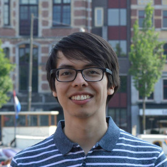

</br></br>
I am a Master's student in Artificial Intelligence at the University of Amsterdam. I am interested in machine learning, natural language procesing and the bridge between these and automated reasoning.
</br></br>
I received a BSc degree in Electronics Engineering from Universidad Distrital Francisco José de Caldas at Bogotá, Colombia. <a href="https://github.com/dfdazac/bsc-thesis" target="_blank">My thesis</a> involved the application of artificial intelligence to the design and optimization of electrical machines.
</br></br>
I share some of the things I learn here in the form of blog posts. Feel free to visit the Writing section!
